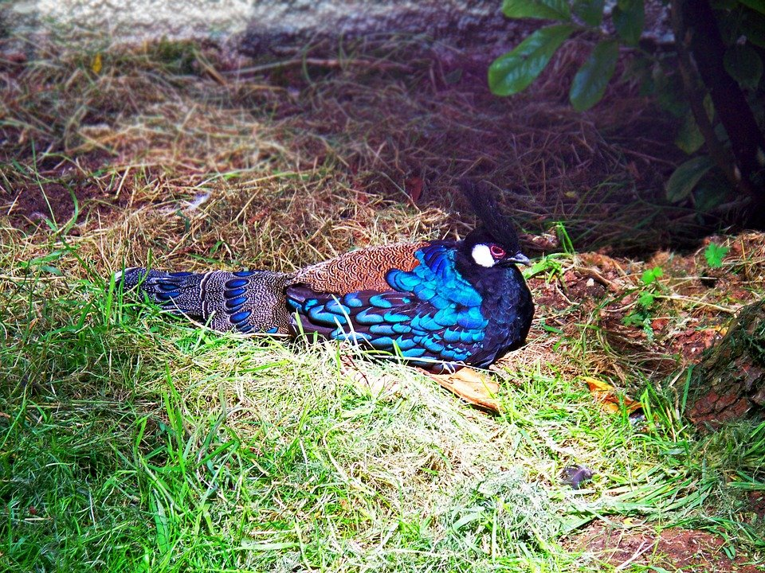

Solution: Cryptoornithology
Answer: PEACOCK-PHEASANT
Written by chimpaznee
We are presented with a diagram that contains some pictures of birds, strange symbols and nests with colourful eggs. Below the grid, there are two sets of modified cryptic clues: “Tags” and “Extra Practice”. The clues contain symbols whose meaning we do not know yet, but we are informed that changes must somehow be made.
How the symbols work
Each symbol affects the emboldened word that comes before it, and the word needs to be changed in some way for the clue to work. Each symbol indicates a different transformation that remains consistent between all occurrences of the same symbol. To figure out how these work, we’ll need to parse the other parts of the clues to figure out what changes need to be done for them to work. In addition, the shapes of many of the symbols allude to their function.
As an example, here is the last Extra Practice clue: Uncover lever that includes one (6). The answer is REVEAL. The definition is UNCOVER and the wordplay is REVE(A)L, where the symbol indicates that we need to reverse “lever”. The result of reversal, “revel”, also happens to be a valid word.
Here is what each symbol does, the result of which will always be a valid word:
| Symbol | Transformation |
|---|---|
| Reverse the word | |
| Expand a clipped word | |
| Remove the last two letters | |
| Remove the middle letter | |
| ROT13 with NATO Phonetic Alphabet | |
| Turn word into NATO Phonetic Alphabet equivalent | |
| Change one or more vowels | |
| Prepend S | |
| Change the first letter to G |
Solving the clues
The Extra Practice clues are meant to be an additional aid to figuring out the transformations, in addition to the Tag clues. Solving these is completely optional and their answers won't be used further in the puzzle. Still, here are the solutions to the Extra Practice clues:
| Clue | Changed word | Answer | Explanation |
|---|---|---|---|
| Reproduces Byzantium's original roads (6) | REEDS | BREEDS | B + REEDS |
| Vegetable composed of even notes (7) | SEVEN | CABBAGE | Seven "note" letters (A-G) |
| Sentimental twist to one capital (9) | LIMA | EMOTIONAL | Anag. of TO ONE LIMA |
| Confine in Spain , it’s said (6) | SPIN | INTERN | Homophone of "IN TURN" |
| Head bug drop taking middle of limo (5) | LIMOUSINE | LOUSE | U (middle of "LIMOUSINE") in LOSE |
| Replace the flower in a monkey 's living space with electronic cash (5) | MONK | MONEY | MON(ASTER→E)Y (MONASTERY = monk’s living space) |
| Coops in every direction (4) | SCOOPS | NEWS | Every compass dir. (N+E+W+S) |
| Bird of darkness, in Yale (11) | GALE | NIGHTINGALE | NIGHT + IN + GALE |
| Delta is one in favor of former WWE chairman (8) | QUEBEC | PROVINCE | PRO + VINCE |
| Uncover lever that includes one (6) | REVEL | REVEAL | A in REVEL |
There are 12 Tag clues. This is the same as the number of birds in the image, which suggests (along with the instruction to "tag" the birds) to pair them up later. Here are the solutions to the Tag clues:
| Clue | Changed word | Answer | Explanation |
|---|---|---|---|
| Oscar to appear to flourish (5) | BRAVO | BLOOM | B + LOOM |
| Cheerful lover stuck in a loop (6) | ROMEO | BRIGHT | R in BIGHT ( = loop of rope) |
| Oddly-deprived acrobat tern drops new glass tray (7) | STERN | COASTER | aCrObAt lacking odd-position letters + STER(-n) |
| Prudent organization's fruit (5) | PRUDE | DRUPE | Anag. of PRUDE |
| Abuse that woman’s ancestor (6) | OBESE | FATHER | FAT + HER |
| Globe sold before breakfast’s beginning (3) | GOLD | ORB | OR ( = gold) + B |
| Document ribbon , perhaps, within proper limits (5) | GIBBON | PAPER | APE inside PR (ends of "proper") |
| Royal rule ends gales (5) | GAL | REGAL | ends of RulE + GAL |
| Do again, per direction without direction (6) | REP | REPEAT | REP + EA(-s)T |
| In Petra, flu is tame (5) | INFLUENZA | TRAIN | hidden in peTRA INfluenza |
| Pro at unconventional trick (4) | PRAT | TRAP | Anag. of PRAT |
| Audibly pronounce “tree” (3) | PRONOUN | YEW | Homophone of "YOU" (pronoun) |
Solving the diagram
Equipped with the clue answers and knowning the functions of the symbols, we can now have a closer look at the diagram. First of all, we should identify the birds, which can be done by reverse image search or carefully finding terms to describe them, then putting these in a search engine. We can observe that each bird has a colour in its common name (red/yellow/green/blue), and also try to find a way to pair up the birds with the Tag answers.
It turns out that each answer can also be associated with the common name of a bird, whether it is by forming a phrase, a synonym, or some other semantic connection. Once the Tag answers are connected to birds, we can begin to follow the paths and and try to find where each word ends up and how it gets changed. By assuming that all paths result in valid words (both as intermediate and final products), and that bird colour must correspond to egg colour (or RYGB letter on nest), there is a unique correct arrangement of the paths the birds or words take.
After following the paths to the nests, we should use the number of eggs in each nest to index into the final words. Going in clockwise order by nest starting from the top, these are:
| Bird | Clue answer | Intermediate steps | Final word | # of eggs | Letter |
|---|---|---|---|---|---|
| Blue-footed booby | TRAP | → STRAP → | PARTS | 1 | P |
| Red-rumped parrot | REPEAT | → ECHO → | ROMEO | 2 | O |
| Yellow bishop | FATHER | → PAPA → | CHARLIE | 5 | L |
| Red-bellied woodpecker | YEW | → YAW → WAY → | SWAY | 4 | Y |
| Green-breasted mango | DRUPE | → DRAPE → | GRAPE | 4 | P |
| Blue-breasted kingfisher | REGAL | → LAGER → | LAG | 1 | L |
| Greater green leafbird | PAPER | → PIPER → | PIER | 3 | E |
| Blue-bellied roller | COASTER | → COAST → | COST | 1 | C |
| Red-headed weaver | ORB | → BRO → BROTHER → | BROTH | 4 | T |
| Green-crowned brilliant | BRIGHT | → BRIG → BRAG → | GARB | 3 | R |
| Yellow-bellied flowerpecker | BLOOM | → GLOOM → GLEAM → GLAM → | GLAMOUR | 5 | O |
| Yellow rail | TRAIN | → GRAIN → | GRIN | 4 | N |
The result of indexing is “POLYPLECTRON”. This is a genus of birds whose common name is the final answer to the puzzle – PEACOCK-PHEASANT.
Author’s Notes
Chirp.
I like birds, and would often spend long times watching them when I was younger. I still sometimes stop what I’m doing to watch a flock of birds.
I also like cryptics, especially if you have to analyze the wordplay in order to work out the parts of the puzzle, so this was a natural thing to write for me. The hardest part was coming up with 12 words that are semantically connected to their avian counterparts, while at the same time transformable several times and extract to the right letters. Originally I wanted to use the cluephrase COMMON NAME OF POLYPLECTRON but it was virtually impossible with the puzzle’s constraints, so I thought including this in the flavour text can fly. In the end, I’m quite happy with the set of words and transformations that I came up with. Though I think “YEW” is non-ideal (I’m only using it because the extraction needs a Y), it did not ruffle any testsolvers’ feathers.
The puzzle's name is pronounced with separate O sounds. It has also occasionally been nicknamed “Cryptobirb” or "Cryptobird" internally.
Here are a couple of clues that were intended for the Extra Practice section but did not make it to the final puzzle:
• Tie door part with golf for the end (4)
• Uniform 's been torn - Behold the tragedy (7)
In addition to these, Vince McMahon retired while this hunt was being written, which means I had to add the word "former" to the respective clue.
And as a finishing note, here is a picture of a Palawan peacock-pheasant:

Image Attributions
The bird pictures can all be found in Wikimedia Commons:
• Blue-footed booby
• Red-rumped parrot
• Yellow bishop
• Red-bellied woodpecker
• Green-breasted mango
• Blue-breasted kingfisher
• Greater green leafbird
• Blue-bellied roller
• Red-headed weaver
• Green-crowned brilliant
• Yellow-bellied flowerpecker
• Yellow rail
{kind=link}
{kind=link}
.jpg){kind=link}
{kind=link}
RWD.jpg){kind=link}
{kind=link}
{kind=link}
.jpg){kind=link}
_(15679994373).jpg){kind=link}
_female.jpg){kind=link}
_01.jpg){kind=link}
{kind=link}